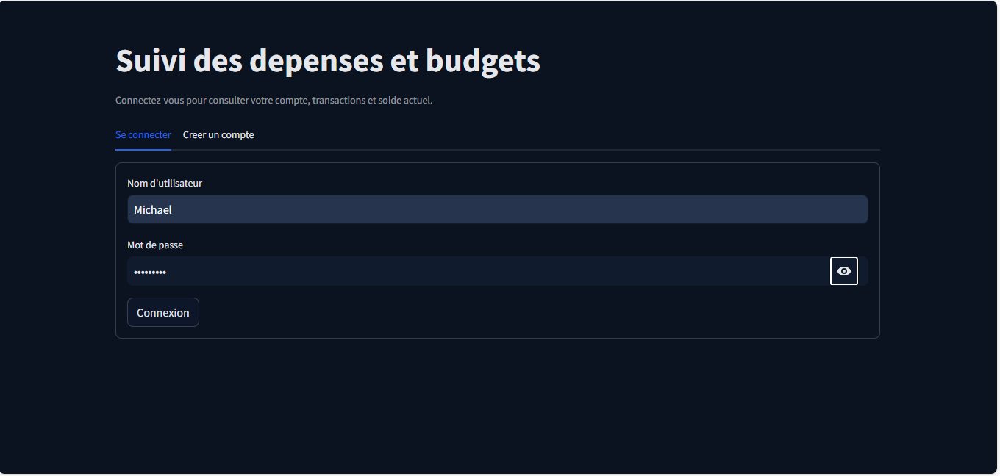
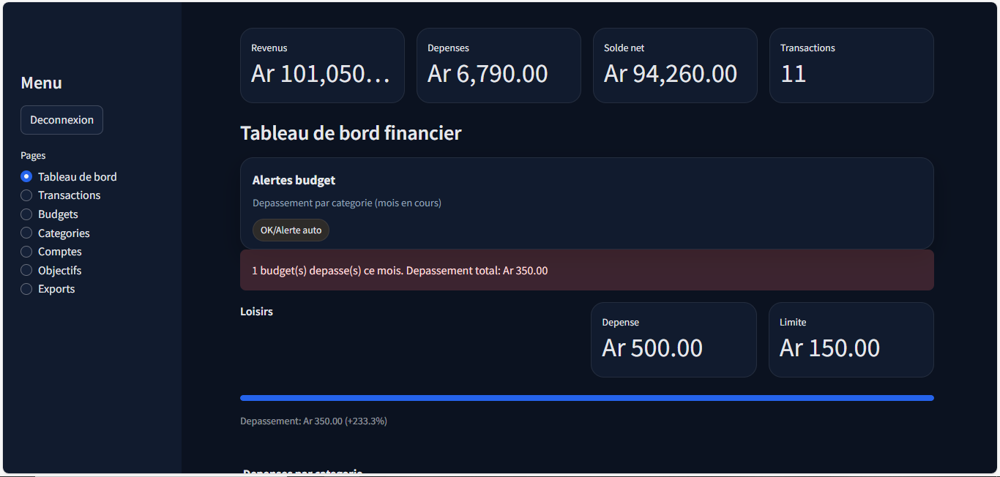
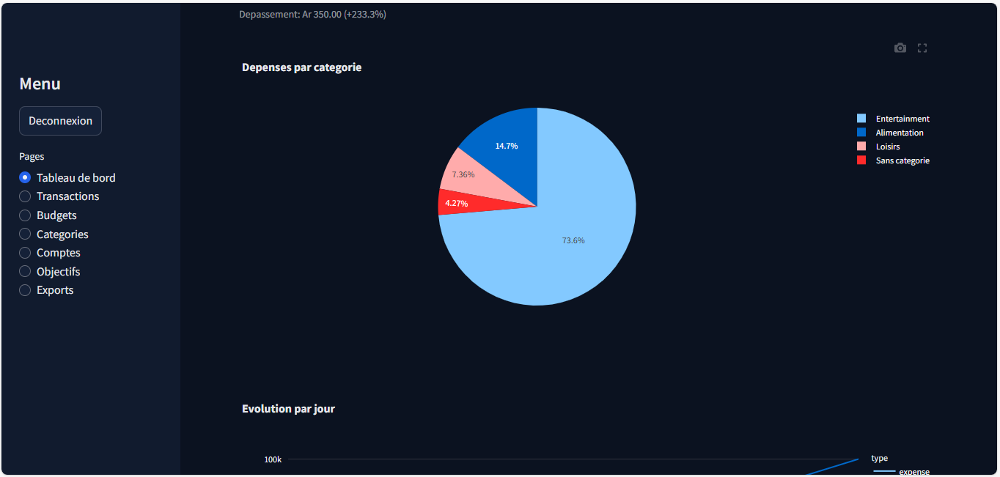
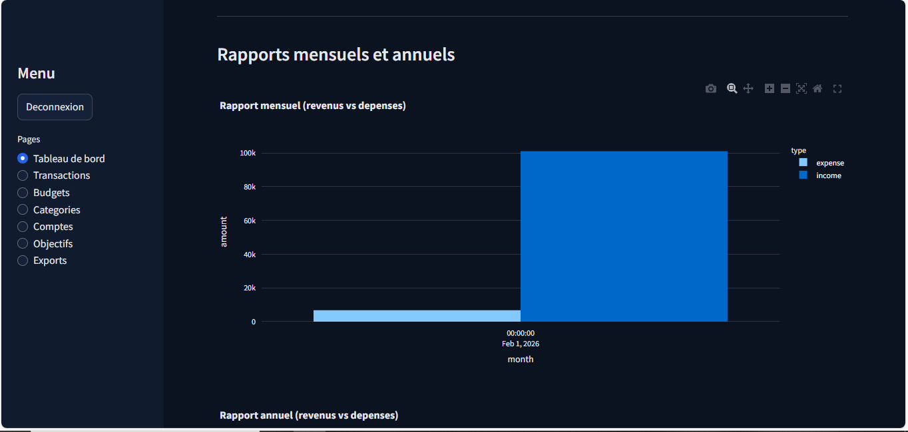
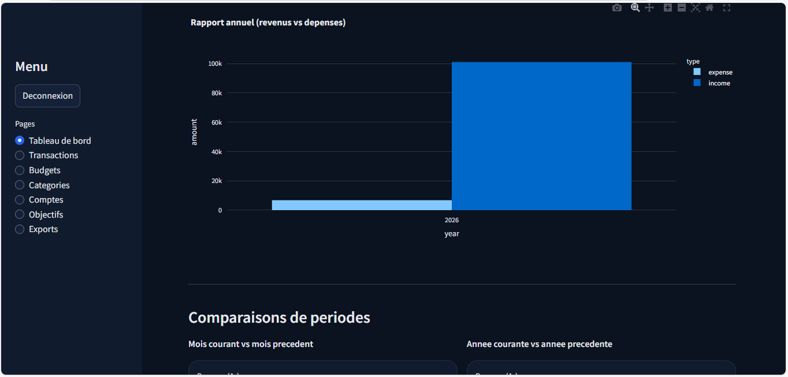
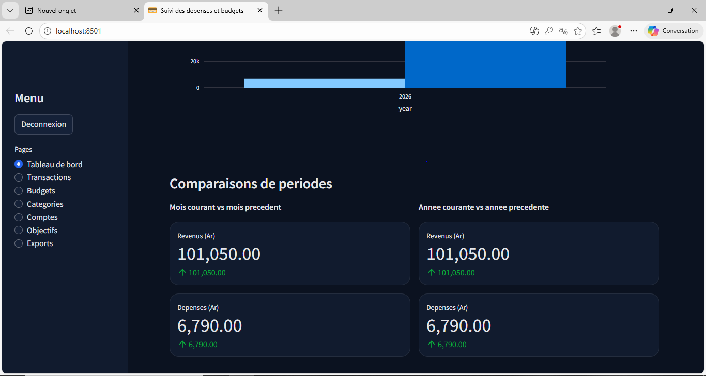

Étude de cas
Application de gestion des revenus et dépenses
Une application de suivi budgétaire qui centralise les transactions, automatise les calculs utiles et rend l'analyse plus lisible.
Informations rapides
- Type de projet
- Application de suivi budgétaire
- Mon rôle
- Information à compléter
- Durée
- Information à compléter
- Statut
- Information à compléter
- Technologies
- Streamlit, Plotly, FastAPI et Python
Contexte
Ce projet applicatif a été conçu pour faciliter l'enregistrement, l'organisation et l'analyse des revenus et des dépenses. L'objectif principal était de centraliser les informations utiles dans une interface claire, sans multiplier les écrans ni les manipulations.
Problème rencontré
Rendre le suivi budgétaire plus lisible grâce à un historique exploitable et à une vision immédiate du solde.
Mon rôle
Information à compléter
Solution
Une application Streamlit reliée à FastAPI et complétée par des visualisations Plotly pour mieux lire les données.
Technologies
Streamlit, Plotly, FastAPI et Python pour combiner interface, logique métier et visualisation.
Fonctionnement
L'application relie une interface Streamlit à une API FastAPI et utilise Plotly pour présenter les données financières sous forme de graphiques.
Fonctionnalités principales
- Ajout, modification et suppression des revenus et des dépenses.
- Calcul automatique du solde disponible.
- Catégorisation des transactions pour faciliter l'analyse.
- Historique clair des opérations enregistrées.
- Résumé et graphiques pour visualiser les performances financières.
Difficultés et décisions techniques
Décisions documentées : associer Streamlit, FastAPI et Plotly pour séparer l'interface, la logique applicative et la visualisation.
Difficultés rencontrées : Information à compléter
Captures d'écran
Les captures suivantes montrent l'interface, les vues de suivi et les éléments utilisés pour analyser les données plus rapidement.







Résultats et apprentissages
Résultat : les transactions, les catégories et les indicateurs financiers sont regroupés dans un seul espace de travail.
Apprentissages : Information à compléter